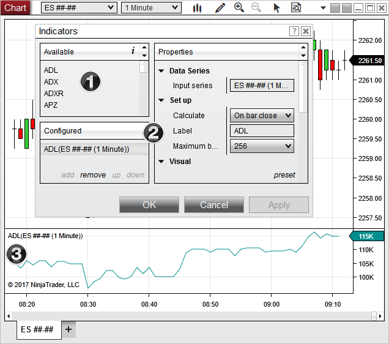

|
<< Click to Display Table of Contents >> NinjaScript Lifecycle |


|
NinjaScript Lifecycle
|
<< Click to Display Table of Contents >> NinjaScript Lifecycle |
|
NinjaTrader uses a State change system to represent various life cycles of your NinjaScript object. For more basic indicators and strategies, simply understanding each State described on the OnStateChange() page is sufficient. However, for more advanced development projects, it is critical to understand how NinjaTrader calls these states for various instances throughout the lifetime of the entire application.
There are two categories of instances instantiated by NinjaTrader:
•"UI" instances representing its default properties on various user interfaces
•The "configured" instance executing your custom instructions
In both categories, OnStateChange() is called at least twice: once to State.SetDefaults acquiring various default property values, and then again to State.Terminated handling internal references cleanup.
Note: It is important to understand that previous major versions of NinjaTrader were not so diligent in running termination logic for UI instances and the current major NinjaTrader 8 version has been changed to help properly address related issues. |
To elaborate on that process, imagine the sequence of user events required to start an indicator on a chart:
1.User right clicks on a Chart and select "Indicator"
2.User adds an Indicator from the Available list
3.User configures desired Properties and presses "Apply" or "OK"
During this sequence, there are actually 3 instances of the same indicator created by NinjaTrader:
1.The instance displaying the Name property to the list of "Available" indicators (Note: this process involves creating an instance of all indicators in order to build the complete list)
2.The instance displaying the individual Name and its default Properties
3.The instance configured and executing on the chart

To visualize how each instance goes through its States, please consider the logic and flow chart below:
1.In order to display the indicator name in the list of "Available" indicators, the NinjaTrader core must find the Name of each installed indicator defined in their SetDefaults. This occurs simultaneously for every indicator installed on the system in order to build the full list of available indicators.
2.The selected indicator is then cloned and SetDefaults is called again in order to display the default properties to the "Properties" grid. This only occurs for the individual indicator.
3.After the user has set their desired property settings and press OK or Apply, the indicator is once again cloned and runs through its full state management. This only occurs for the indicator configured to execute on the chart.
Warning: Since NinjaTrader is multi-threaded, it is possible the OnStateChange() logic will be operating on a different thread than your indicator instances. Due to this fact, if logic in your OnStateChange() method is thread sensitivity (e.g., dependent on UI threads vs Instrument threads) please make sure to read the section on multi-threading considerations and check for thread access in your OnStateChange() logic |
It is the 3rd "configured" instance you are concerned with developing, but you should also be aware of the "UI" instances which are triggered at various stages of NinjaTrader.
Notes: 1.The example above is written for an indicator, but the same concept of state management applies to every NinjaScript object type 2.The UI instances do not reach State.Terminated until the user closes out of the UI feature displaying the object 3.Since AddOns run in the background and are not dependent on UI elements, they will run through their SetDefaults/Terminated states after each NinjaScript compile and startup/shutdown of NinjaTrader. 4.The configured instance will also be cloned back to UI instances during various user actions (e.g, re-opening an indicator dialog to reconfigure settings, or user copying & pasting the indicator to a new panel or chart). Therefore you should not assume that objects (such as ChartControl) will not be accessible in the UI instances. 5.In some extreme scenarios, you may need to execute custom logic before or after an object is cloned. Overriding the default behavior can be done via the virtual Clone() method |
Since OnStateChange() can be called at various times throughout NinjaTrader, you should be diligent in handling each state and managing resources only when it is appropriate that your NinjaScript object was actually configured:
•State.SetDefaults should be kept as lean as possible to prevent logic from processing superfluously and causing problems unrelated to the configured instance. Only properties which need to be displayed on the UI should be set in this state.
•Resources should only be set up once an object has reached State.Configure or State.DataLoaded (see best practices for more information)
•State.Terminated logic should be specific in when it resets a value or destroys a resource. Since the running instance can be cloned back to a UI instance, checking that a mutable property exists before accessing sometimes is not enough. You may need to consider adding a flag to help decide when a resource needs to be reset or destroyed.
Let’s say your object was an indicator looking to add a custom toolbar element to the chart, and when the indicator is removed from the chart, you would want to make sure your toolbar elements are also properly removed. In the OnStateChange() handler you change could add the custom toolbar once the State has reached State.Historical, and remove the toolbar once the State has reached State.Terminated.
To ensure that the remove logic only runs in instances that were actually configured, you can see we in the example below we also track that the toolbar needs a reset in State.Terminated state via a custom bool variable. In other words, the proper reset request comes from our configured instance and would be ignored if the State.Terminated is called from outside our object (i.e., a UI instance). This will prepare our object to properly handle both situations in which State.Terminated could be called in the NinjaTrader state management system.
|
|---|
// custom flag to help time termination logic |
Clone is the operation of iterating over all public browsable properties on a NinjaScript object and duplicating the values over to a freshly generated instance. For the majority of NinjaScript with standard properties the clone process is transparent to you and you do not need to be concerned the the clone process. For those of you that want more control or will be utilizing complex properties then knowledge about clone is essential. Cloning is performed in 2 primary use cases:
1.Configuring an instance in an object dialog and then cloning the configured data to an actual NinjaScript instance applied for example to a Chart. (Configuration then Run)
2.When triggering 'Reload NinjaScript' or "Reload All Historical Data'
NinjaScript objects have a base clone method implemented which will iterating over all browsable properties and copy by value to the next instance. The rules follow the 'clone' rules described in the clone documentation located here and described above. The default behavior will work in almost all cases except for when you have some complex custom property which needs specific clone behavior. In which case we allow the ability to override Clone() and specify your own behavior.
Note: If you plan to utilize complex class properties on NinjaScript, you can specify your own clone method. However when NinjaScript is compiled in NinjaTrader a new DLL holding the compiled IL code is 'hot-loaded' into NinjaTrader. As a user or developer would try to reload NinjaScript or configure an existing NinjaScript object, any complex class will not resolve since the class will be residing in two different assemblies. This problem cannot be solved with custom clone method and workarounds for this are setting Browsable(false) attribute on that property so it is not cloned or putting the property it its own dedicated assembly. |
XML Serialization comes into play when you have a set of properties and want those properties to persist the user saved workspace (or any templates that are user created).
By default basic types such as int, string, bool will all serialize without issue, if you have a complex property you want its setting maintained on restore then you need to create a string serialized representation of that class. The technique is shown in this example post here where we show how to serialize a color brush.